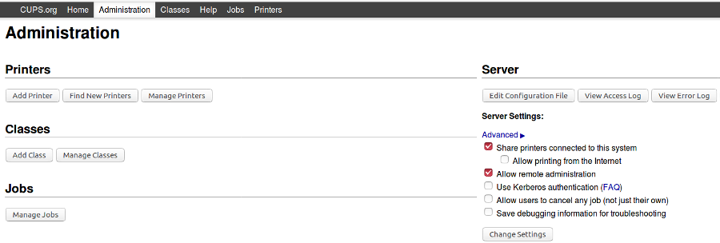
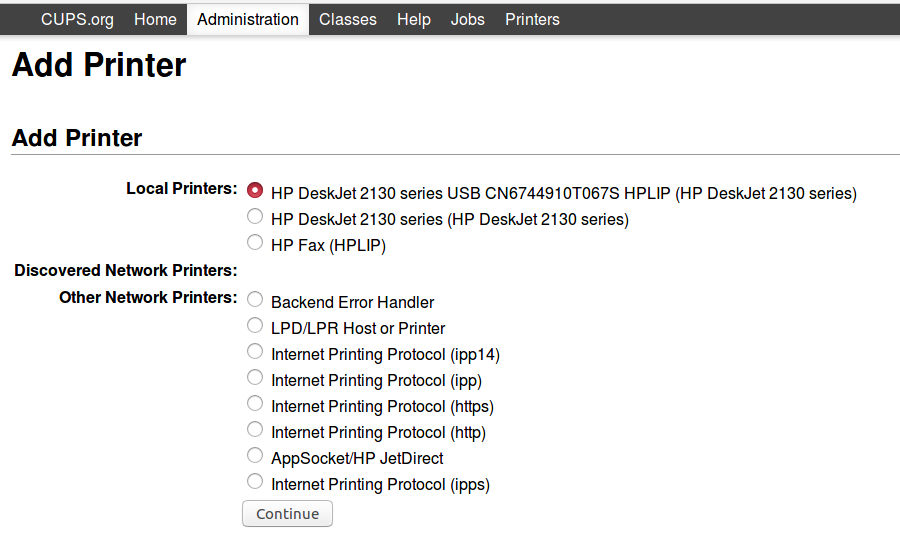
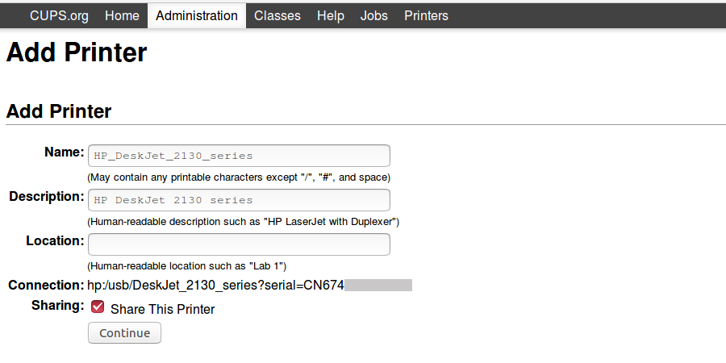
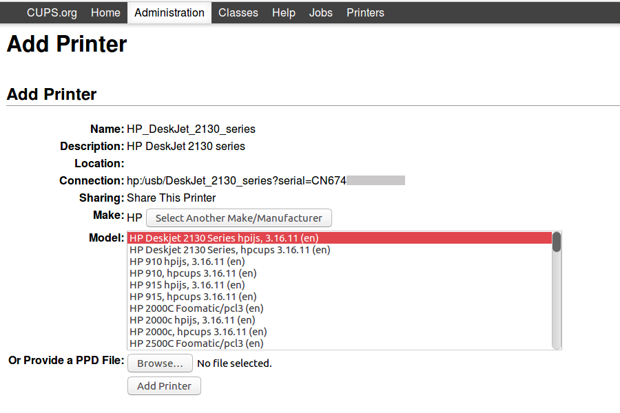
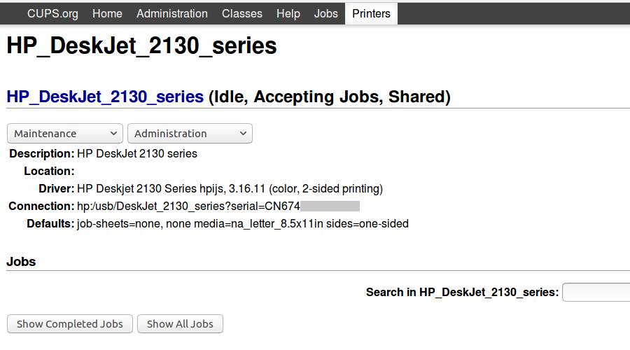

PROJECT: Home Server #9 .: Configure a printer + scanner to receive jobs across the local network.
Let's go!
Multi-purpose printer is an HP Deskjet 2130 connected to a home server running Debian at IP address 192.168.1.88.
0. Printer and scanner packages
Install a complete set of CUPS (printer) and SANE (scanner) packages on the server and grant (example) username foo admin privileges ...
# apt install task-print-server
# adduser foo lp
# adduser foo lpadmin
# adduser foo scanner
1. Device drivers and firmware
Attach the printer to server ...
$ lsusb
[...]
Bus 002 Device 004: ID 03f0:e111 Hewlett-Packard
Some printers require additional drivers and firmware from the vendor. Libre software HPLIP adds support for the Deskjet and is packaged for Debian/Ubuntu ...
$ apt install hplip printer-driver-hpijs
2. Web admin remote access
Primary configuration of CUPS is done in /etc/cups/cupsd.conf and a web interface is provided for administration. Modify default settings that permit only localhost access to the admin panel to allow access to all machines on local network 192.168.1.* ...
[...]
# Only listen for connections from the local machine.
#Listen localhost:631
# Listen for connections from local and remote machines.
Port 631
# Show shared printers on the local network.
Browsing On
BrowseLocalProtocols dnssd
[...]
# Web interface setting...
WebInterface Yes
# Restrict access to the server...
<Location />
Order allow,deny
Allow from 192.168.1.*
</Location>
# Restrict access to the admin pages...
<Location /admin>
Order allow,deny
Allow from 192.168.1.*
</Location>
# Restrict access to configuration files...
<Location /admin/conf>
AuthType Default
Require user @SYSTEM
Order allow,deny
Allow from 192.168.1.*
</Location>
# Restrict access to log files...
<Location /admin/log>
AuthType Default
Require user @SYSTEM
Order allow,deny
Allow from 192.168.1.*
</Location>
Restart CUPS ...
# systemctl restart cups.service
Example: Server at address 192.168.1.88 has admin functions available via browser at https://192.168.1.88:631/admin (Firefox warns Your connection is not secure on first connect; add an exception for the CUPS ssl certificate).
3. Add the printer
Select Administration->Printers->Add Printer and login with the username assigned previously to the lpadmin group.
   Test the configuration by selecting Maintenance->Print Test Page.
Printer settings are saved to /etc/cups/printers.conf. On the command line, check printer status with lpstat ...
$ lpstat -t
scheduler is running
no system default destination
device for HP_DeskJet_2130_series: hp:/usb/DeskJet_2130_series?serial=CN674...
HP_DeskJet_2130_series accepting requests since Sat 27 May 2017 11:16:37 AM EDT
printer HP_DeskJet_2130_series is idle. enabled since Sat 27 May 2017 11:16:37 AM EDT
4. Access printer from a Linux client
Client machines can dispense with running a local CUPS server and its helper tools. To connect directly with the network printer, download ...
# apt install cups-client
Create client.conf in $HOME ...
$ mkdir ~/.cups
$ touch ~/.cups/client.conf
... and add the address of the server hosting the scanner to the file ...
ServerName 192.168.1.88
Alternative: If the Linux client machine regularly connects to printers on different networks it might prove convenient to download a more complete suite of CUPS packages - apt install cups - and add the network printer via the web interface address localhost:631 or via the native printer config utility included with some desktop environments.
5. Add the scanner
Detect attached device on the server using sane-find-scanner and scanimage ...
$ sane-find-scanner
[...]
found USB scanner (vendor=0x03f0 [HP], product=0xe111 [DeskJet 2130 series]) at libusb:002:004
$ scanimage -L
device `hpaio:/usb/DeskJet_2130_series?serial=CN674...' is a Hewlett-Packard DeskJet_2130_series all-in-one
Run a test ...
$ scanimage > test.ppm
... and retrieve the (grayscale) image from the server and verify the scanner is working on the local server connection (before enabling remote access to client machines).
Modify /etc/sane.d/saned.conf to share the scanner over the local network ...
## Access list
192.168.1.0/24
Setup SANE in systemd and check status ...
# systemctl enable saned.socket
# systemctl start saned.socket
$ systemctl status saned.socket
6. Access scanner from a Linux client
Install scanner tools on the client machine ...
# apt install sane-utils
Modify /etc/sane.d/net.conf to point the client towards the address of the server hosting the scanner ...
connect_timeout = 60
192.168.1.88
Verify the remote scanner is visible to the client ...
$ scanimage -L
device `net:192.168.1.88:hpaio:/usb/DeskJet_2130_series?serial=CN674...' is a Hewlett-Packard DeskJet_2130_series all-in-one
Note: If the client fails to find the remote scanner, reboot the server and try again.
Run a test ...
$ scanimage > test2.ppm
For a simple, graphical scanner program give simple-scan a try.
Happy hacking!